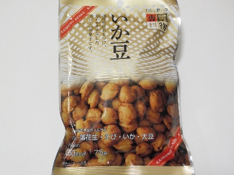

ポッポナッツのいか豆。
2024/05/16

ピーナッツに小麦粉の衣がついたお菓子です。衣にエビとイカが入って、いい味になっています。 美味しい。
塩分があるのでおつまみにちょうどいいです。75グラムあって多いですが、簡単に食べきれました。
愛知県稲沢市北市場町西玄野523-5
2024/05/16

ピーナッツに小麦粉の衣がついたお菓子です。衣にエビとイカが入って、いい味になっています。 美味しい。
塩分があるのでおつまみにちょうどいいです。75グラムあって多いですが、簡単に食べきれました。